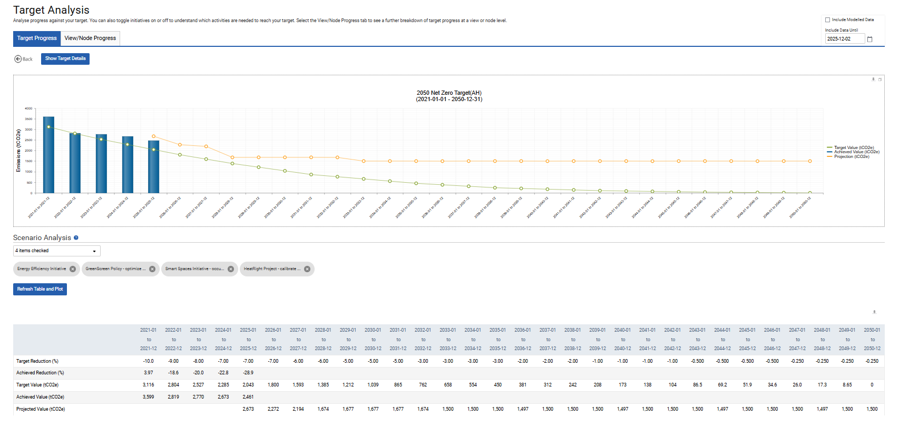
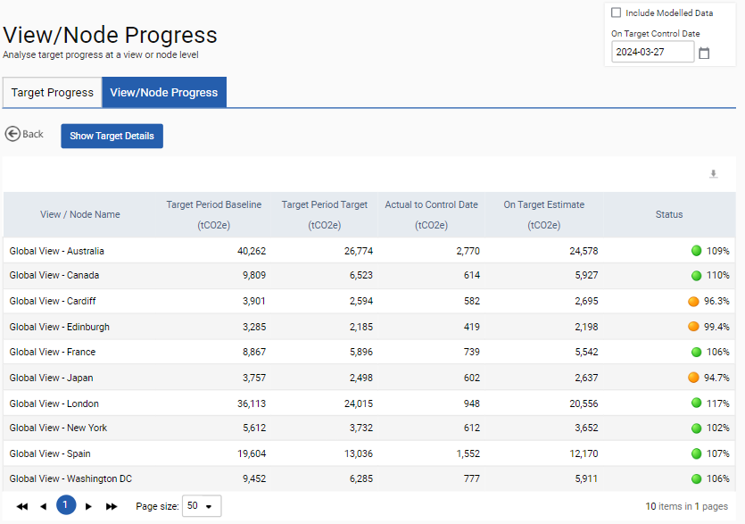

When you click ‘Progress’ on the targets list you are taken to this target progress screen. The grey settings bar at the top lists the details for the target including the name and total target %.
The graph provides a graphical overview of how the target is progressing over time. The table beneath displays the actual values for the target to date and into the future, if applicable.

The rows in the table above are explained below - this information can also be found in the tooltip on the top right of this page:
| Row Name | Explanation |
| Target Reduction % | This is the annual % target required to achieve the total target. |
| Achieved Reduction % | This is the actual emissions or consumption % change for the year to date specified in the 'Include data until' field. |
| Target Value | This is the annual emissions or consumption contribution required to achieve the total target. |
| Achieved Value | This is the actual cumulative consumption or emissions from the start of the target until the date specified in the 'Include data until' field. |
| Projection | Projection starts after the last complete year, remains constant, and adjusts by activated savings initiatives. |
The additional tab for View/Node Progress displays how individual views or nodes in the target are performing against the target. The help bubble provides details for the contents of each column.

The Status colors (blue outline) in the above table refer to how you are performing against your target – see details below.